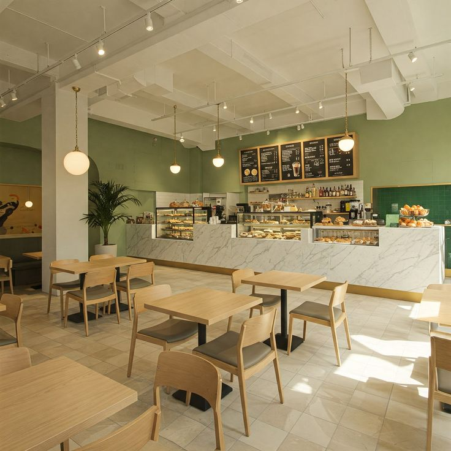
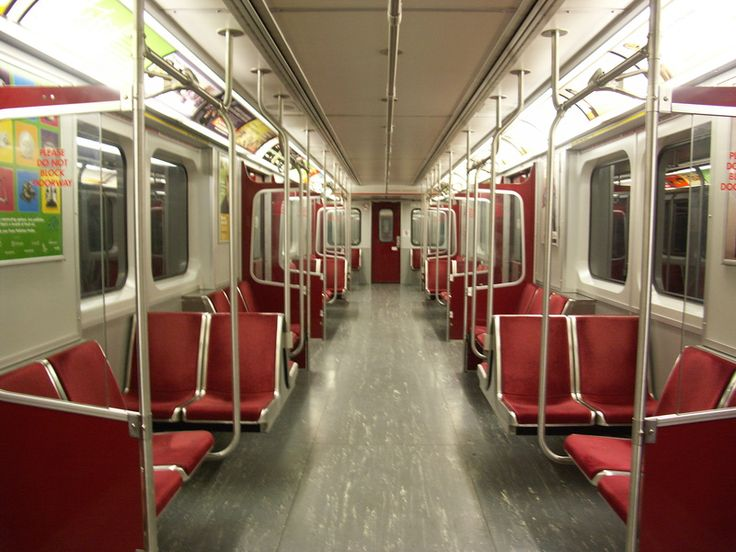
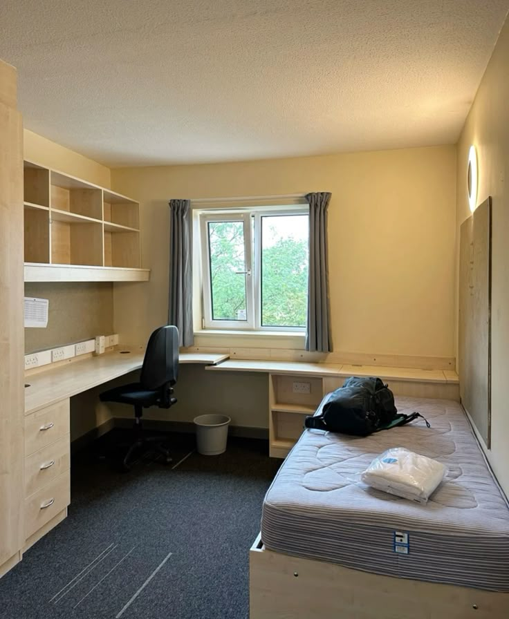
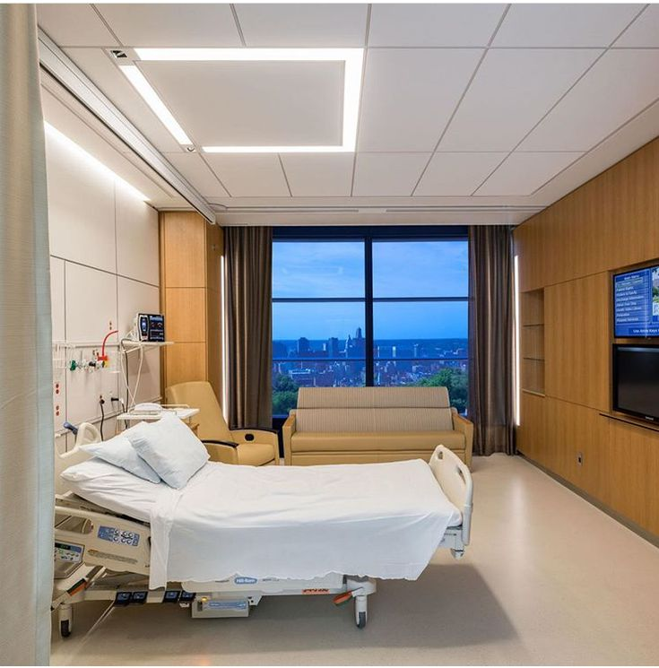
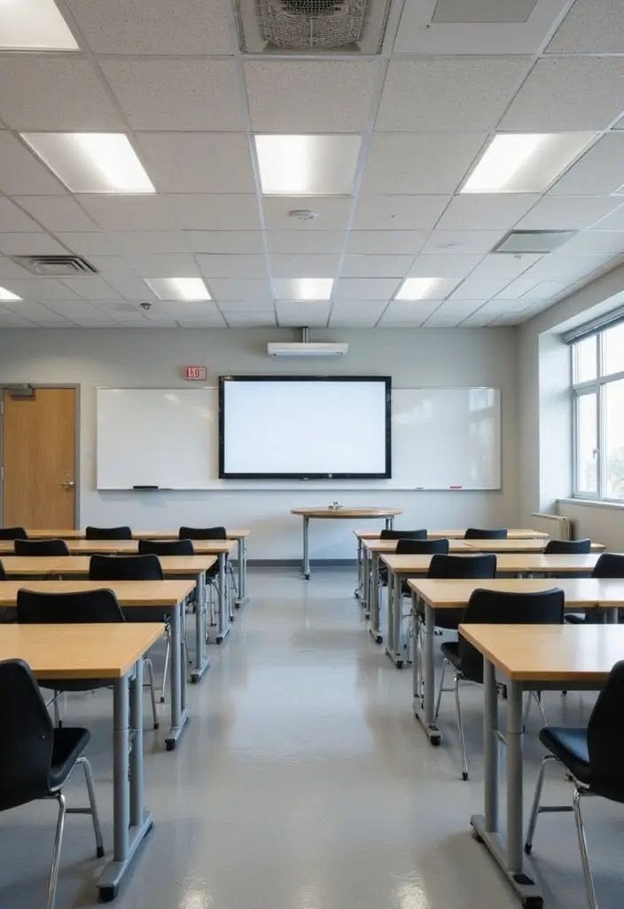

5651 uyumlu imzalı loglama
Loglarınız imzalı olarak bulutta ya da kendi veri merkezinizde saklanır.
KareCode; 5651 uyumlu imzalı loglamadan iki faktörlü doğrulamaya, bulut yedeklemeden merkezi yönetime kadar kurumunuzun dijital güvenliğini sessizce ve kusursuzca üstlenir.
Uyumluluğun ötesine geçen bir platform: misafirlerinize ulaşın, ağınızı koruyun, tüm lokasyonlarınızı tek yerden yönetin.
Loglarınız imzalı olarak bulutta ya da kendi veri merkezinizde saklanır.
Kategori bazlı filtrelemeyle istenmeyen sitelere erişimi engelleyin.
Tüm lokasyonlarınızı tek bir panelden yönetin.
Mobil uygulama ile yönetim paneliniz her an yanınızda.
Erişim noktalarınızı değiştirmeden, mevcut altyapınızla çalışır.
Giriş sayfasını kampanya, duyuru ve etkinlikleriniz için bir vitrine dönüştürün.
Erişim kaydı tutma zorunluluğu olan her işletmede KcLogger, sessizce ve kusursuzca devreye girer.





Güvenlik bir ürün değil, bir tutumdur. KareCode'da her satır kod, her kurulum ve her destek talebi aynı ilkelerle şekillenir.
Yazılım, siber güvenlik ve sunucu hizmetlerinde yirmi yılı aşan birikim.
Tüm iş süreçlerinde müşterilerimizle güvene dayalı, tamamen şeffaf bir ilişki.
Her çözümü, kurumunuzun gerçek ihtiyacına göre özenle biçimlendiririz.
Karmaşık yükümlülükleri sade, zarif ve kullanması keyifli deneyimlere dönüştürürüz.
Sorunlara hızlı ve kalıcı yanıt; bekletmeyen bir destek anlayışı.
Her adımı ölçülebilir, belgelenmiş ve denetlenebilir kılan kurumsal disiplin.